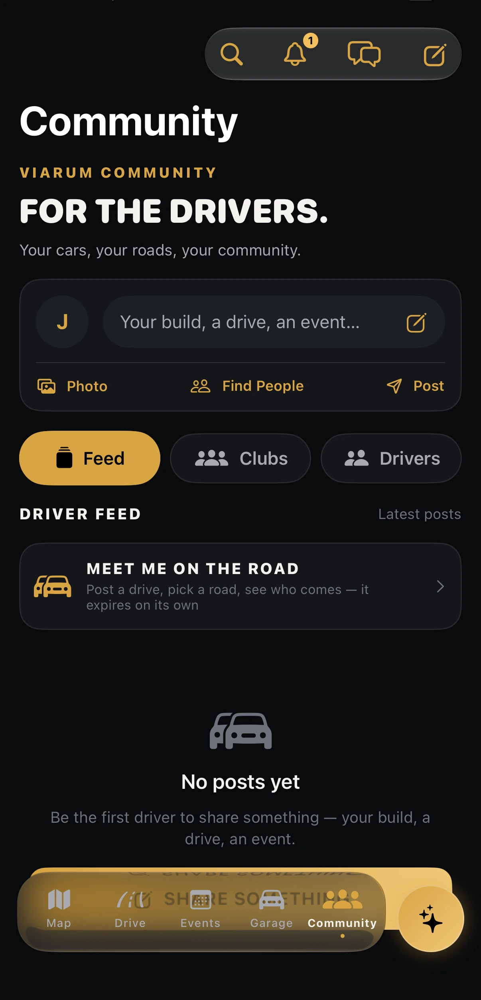
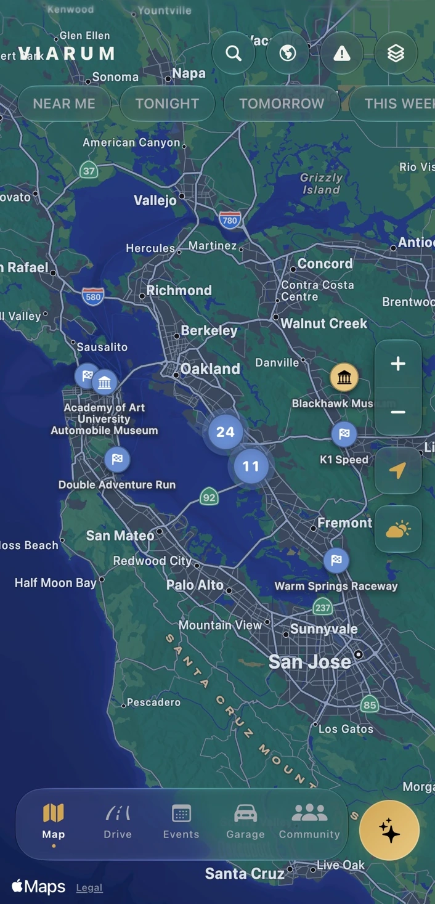
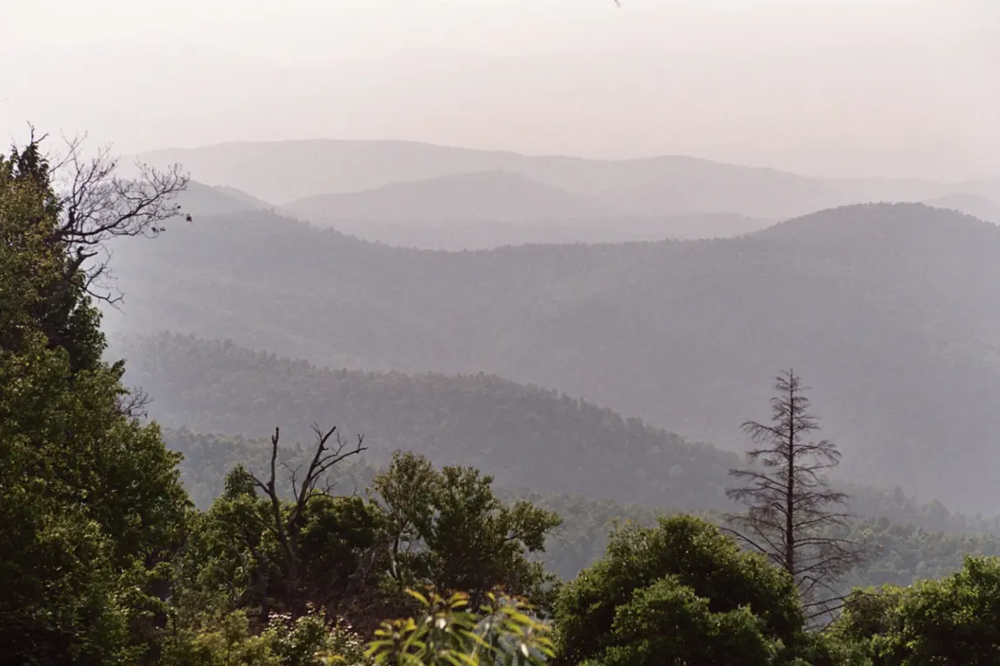
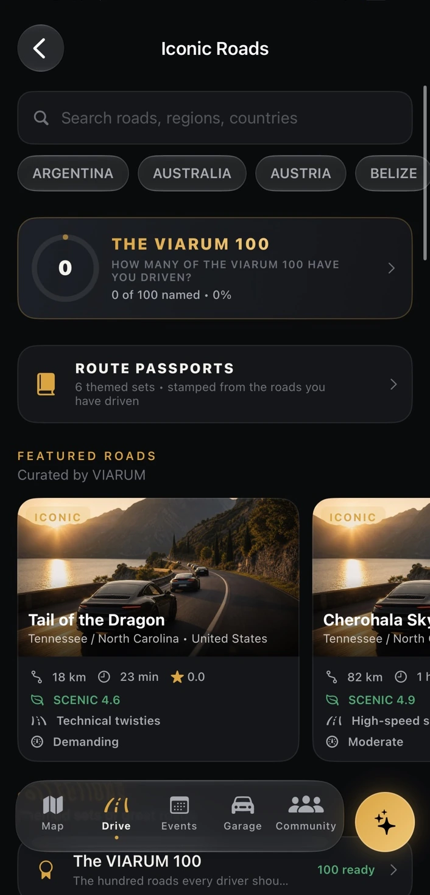
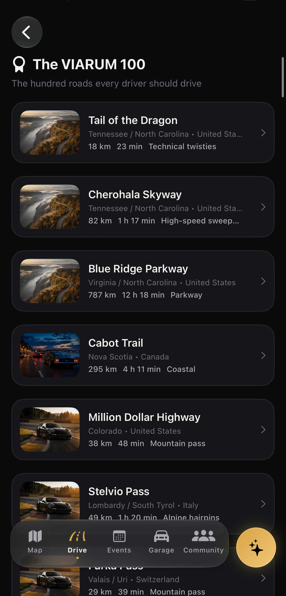
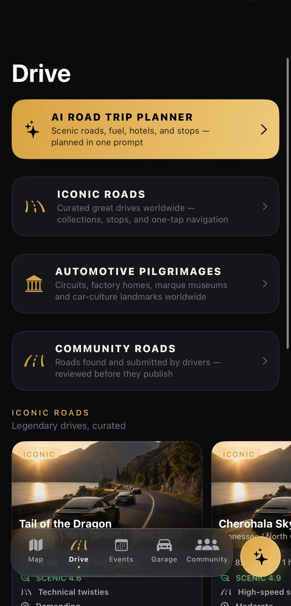
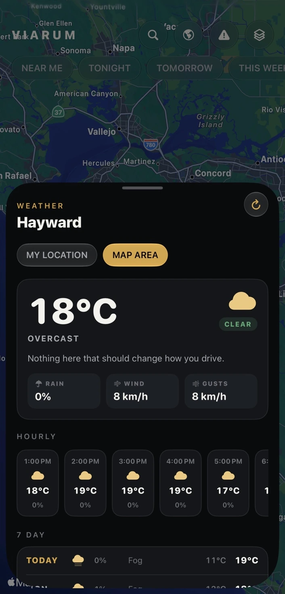
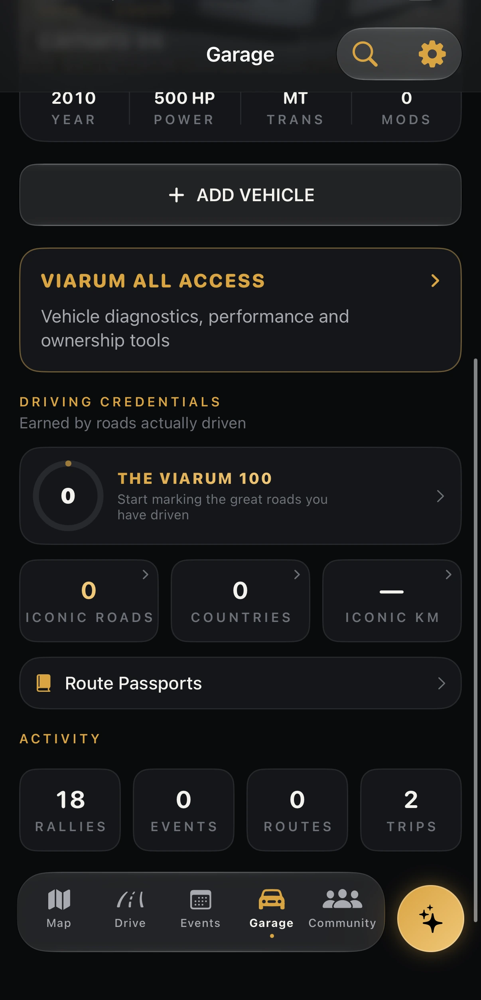
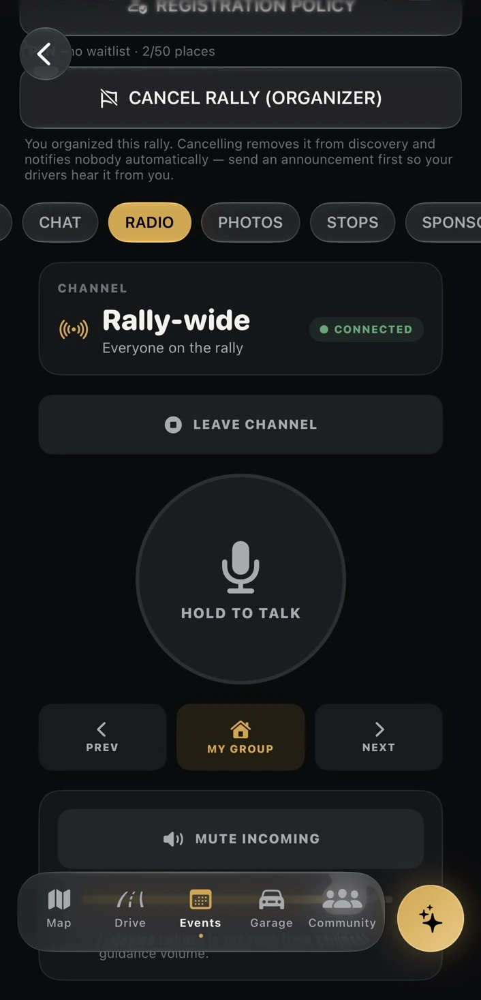

01 / COMMUNITY
Find your people.
Drivers, clubs, meetups and shared passion.
Discover iconic roads, plan road trips, and find rallies and drivers around the world.
Featured drive: Blue Ridge Parkway

Featured drive
Follow the Appalachian ridgeline from Rockfish Gap, Virginia, to Cherokee, North Carolina. Make time for Mabry Mill, a historic stop at milepost 176.
VIARUM brings the entire driving lifestyle together. The most rewarding roads. The places worth stopping for. The events that bring enthusiasts together. One seamless home for your automotive world.


ICONIC ROADS
From alpine passes to coastal highways, discover iconic drives around the world. Explore curated road details, build your next escape and make progress through The VIARUM 100.
PLAN YOUR NEXT DRIVE
Discover routes and plan road trips around the things that matter to you. Bring iconic roads, restaurants, fuel, hotels, stops and your own driving preferences together in one place.


MORE THAN THE DESTINATION.
ONE AUTOMOTIVE WORLD
Find the people who share your passion, explore community experiences, join driving events and keep your own automotive world close.

Drivers, clubs, meetups and shared passion.

Vehicles, driving credentials and personal history.

Organize and participate in the experiences that connect drivers.
Actual VIARUM app screens. Features and availability may vary by release and location.
THE ROAD IS JUST THE BEGINNING
VIARUM is preparing for the App Store. Follow the journey and be among the first to experience a new world of driving.